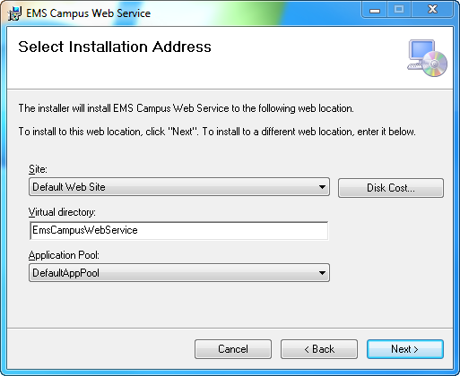
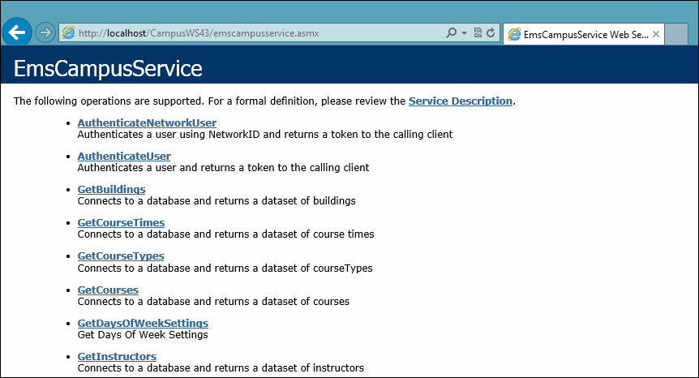

NOTE: The EMS Campus Web Service should not be installed in the same Virtual Directory as other EMS web-based products.

- Flat File
Choose this option if you will be outputting your SIS data to tab-delimited files. The EMS Campus Web Service will connect to and read information from these files which must conform to a specific format. See Appendix A for file format specifications. If you choose this option, please skip to Step 13.
- SIS/CRM
Choose this option if EMS Campus will be tied directly to your SIS database. The EMS Campus Web Service will connect directly to and read information from your SIS.
- SQLClient – MS SQL Server
- OracleClient – Oracle
- ODBC – Other ODBC-compliant database
- Data Source Name – The DSN for your SIS database if you selected OracleClient or ODBC. This option requires an ODBC Data Source created via the ODBC Data Source Administrator.
- Server / Database – Your SIS server name and database name if you selected SQLClient.
http://[ServerName]/EMSCampusWebService/EMSCampusService.asmx(replace [ServerName] with the name of your web server)
The following screen should appear:
